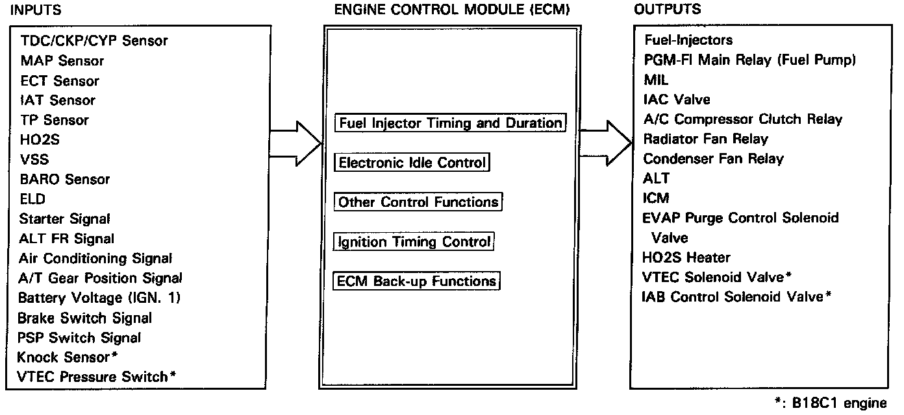
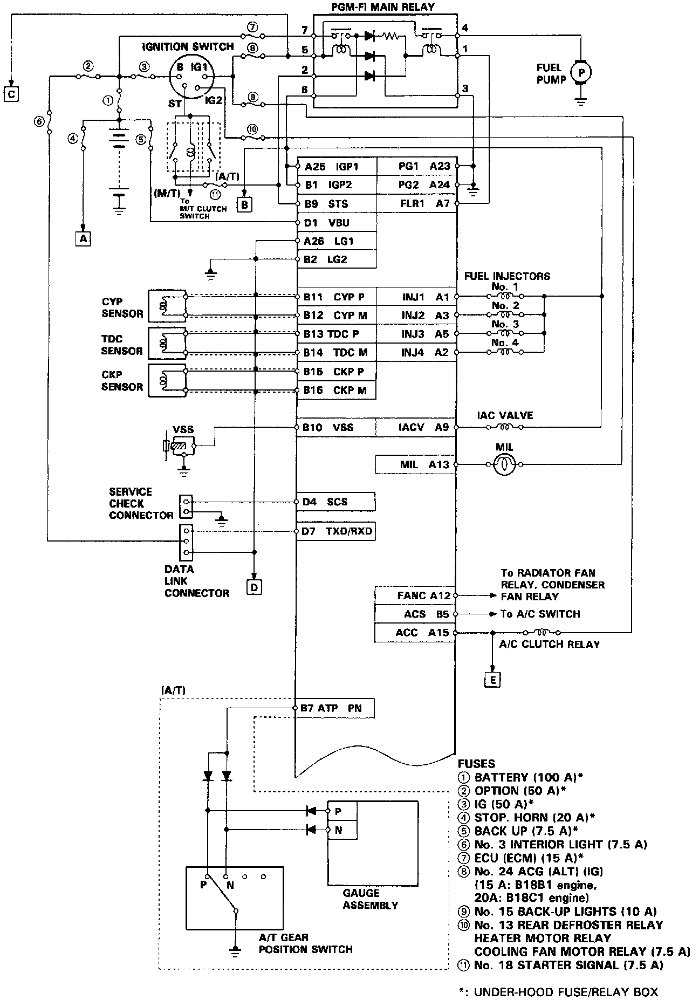
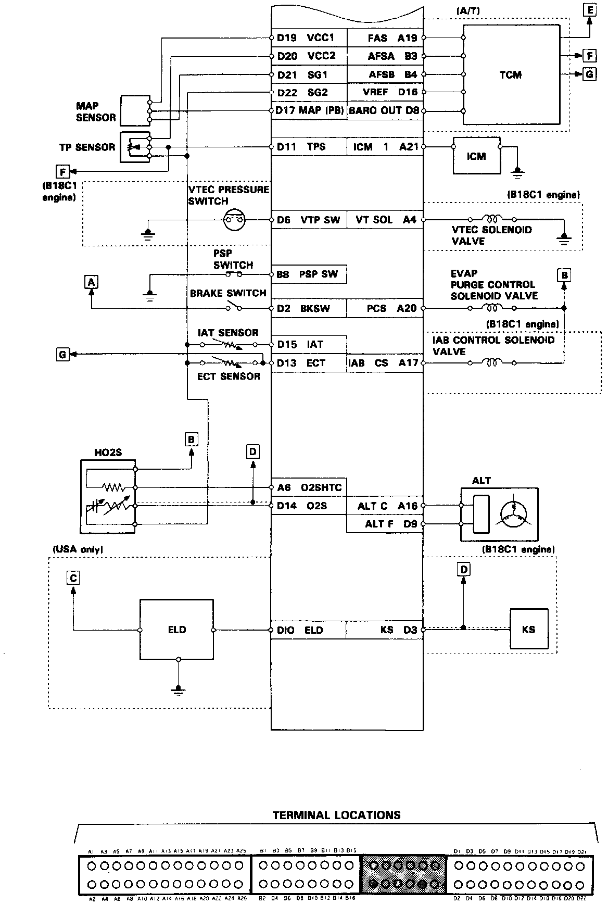

Powertrain Management: Description and Operation
System Description:

PURPOSE
The Programmed Fuel Injection (PGM-FI) system used on this vehicle is designed to monitor and control engine management functions and components including the air/fuel mixture, idle speed and ignition timing to achieve optimum engine performance.
OPERATION
MPFI Control
The PGM-FI contains memories for the basic discharge durations at various engine speeds and manifold pressures. The basic discharge duration, after being read out from memory, is further modified by signals sent from various sensors to obtain the final discharge duration.
Idle Air Control (IAC)
When the engine is cold, the A/C is on, or the alternator is charging, the PGM-FI controls current to the IAC Valve to maintain correct idle speed.
Ignition Timing Control
The PGM-FI contains memories for basic ignition timing at various speeds and manifold pressures. Ignition timing is also adjusted for engine coolant temperatures.
Emission Control Devices
The PGM-FI controls when the Evaporative Emission (EVAP) Control Canister is purged of fuel vapors by controlling the vacuum applied based on input from sensors on the engine.
Fuel Supply System
The PGM-FI system controls the power supplied to the fuel pump to supply fuel to the system as required.
Air Supply System
The PGM-FI system also controls the intake air and how it is routed into the engine. Based on input from various engine sensors the intake air can be routed through the intake manifold either to increase velocity or to reduce intake air friction as needed to maintain optimum engine performance. The routing of the intake air through the air cleaner assembly can also be changed to reduce intake air noise or to reduce friction in the intake air stream as needed once again to maintain optimum engine performance.
System Schematic Diagram (1 Of 2):

System Schematic Diagram (2 Of 2):

System Schematic diagrams